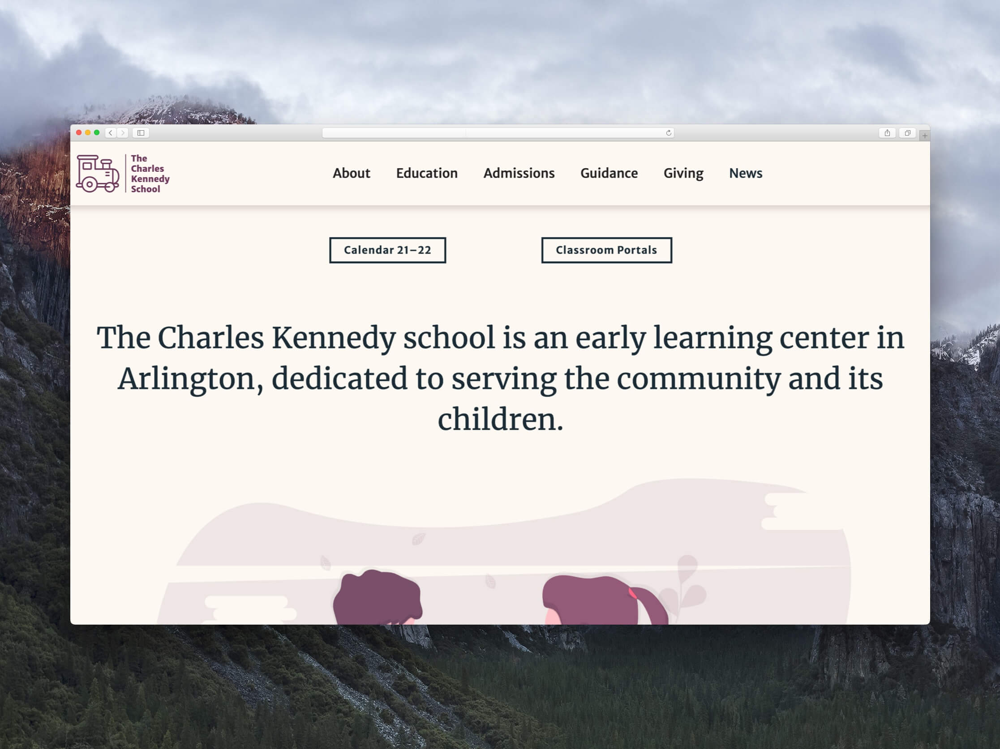
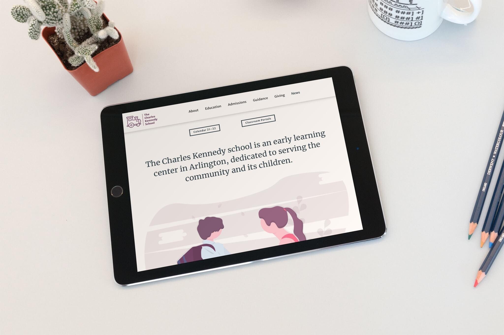
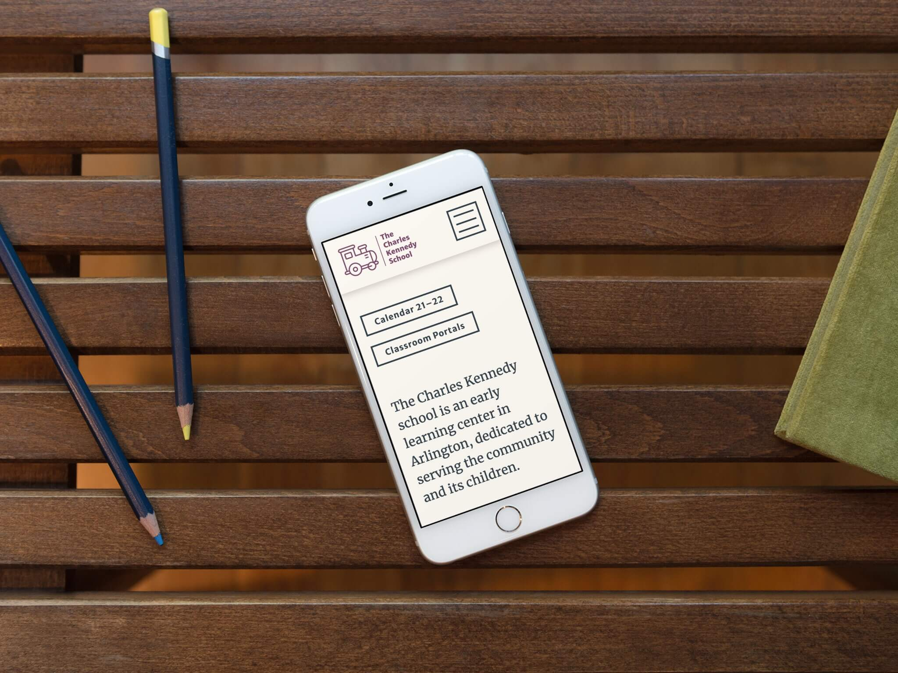

Identity | Branding | Webpage
I conceived of The Charles Kennedy School as a way to combine my background in independent schools and early childhood education with graphic design.
The Charles Kennedy School is a nurturing preschool that provides developmentally appropriate, high quality childcare. I created a visual identity, coherent color palette, and typographic guidelines. I wrote all copy on the website and styled the responsive webpage using webflow’s CMS.
  